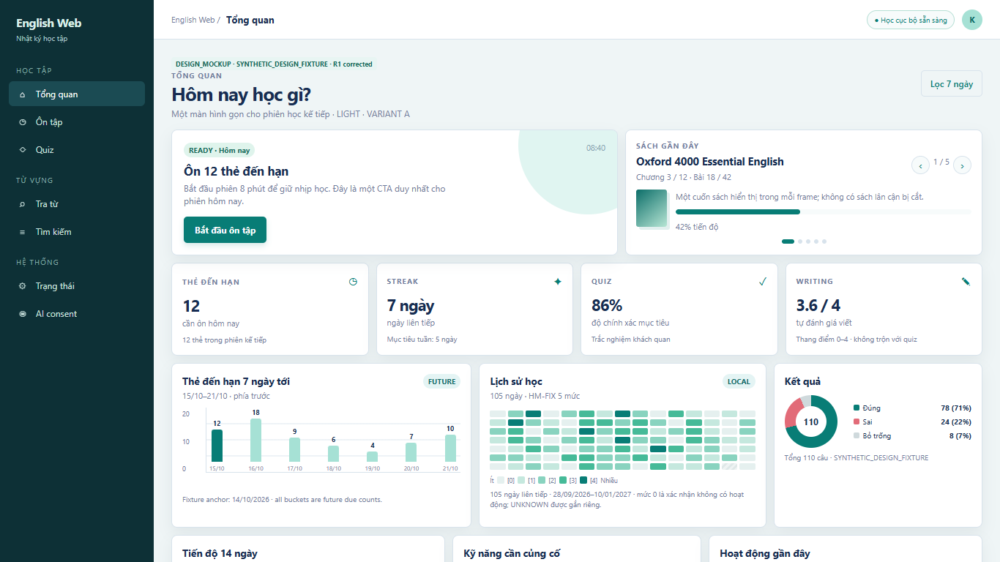
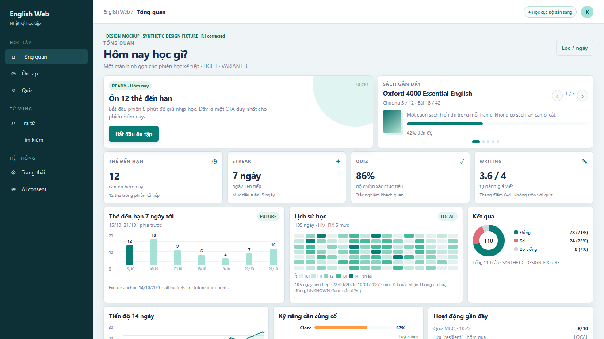
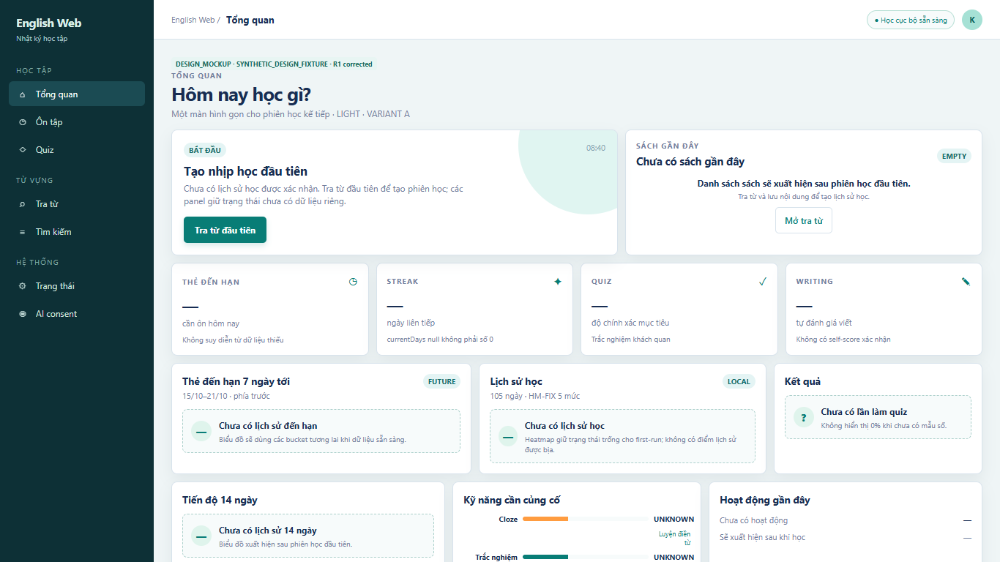
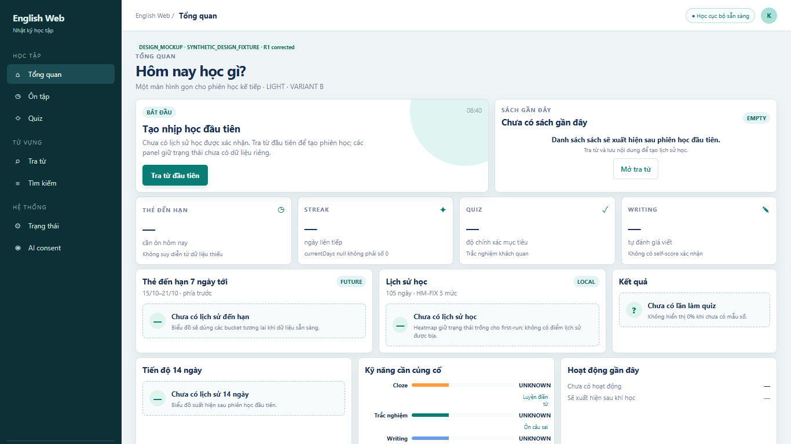
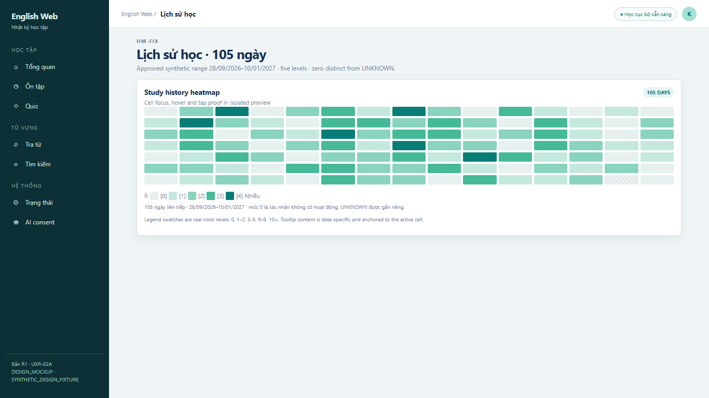
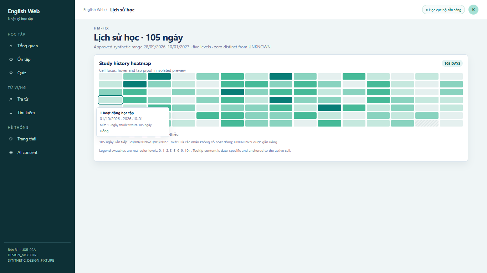

Both variants use the same locked four-row Dashboard, HM-FIX data contract and synthetic fixture. Variant B changes internal spacing only. All frames are DESIGN_MOCKUP / SYNTHETIC_DESIGN_FIXTURE.

Reference-faithful spacing; restored charts, carousel, skills and semantics.
Same widgets and fixture; tighter internal spacing only.
Truthful empty book panel and one onboarding explanation.
Same first-run semantics; compact rhythm.
28/09/2026–10/01/2027; swatch legend.
Cell-specific date/count tooltip.